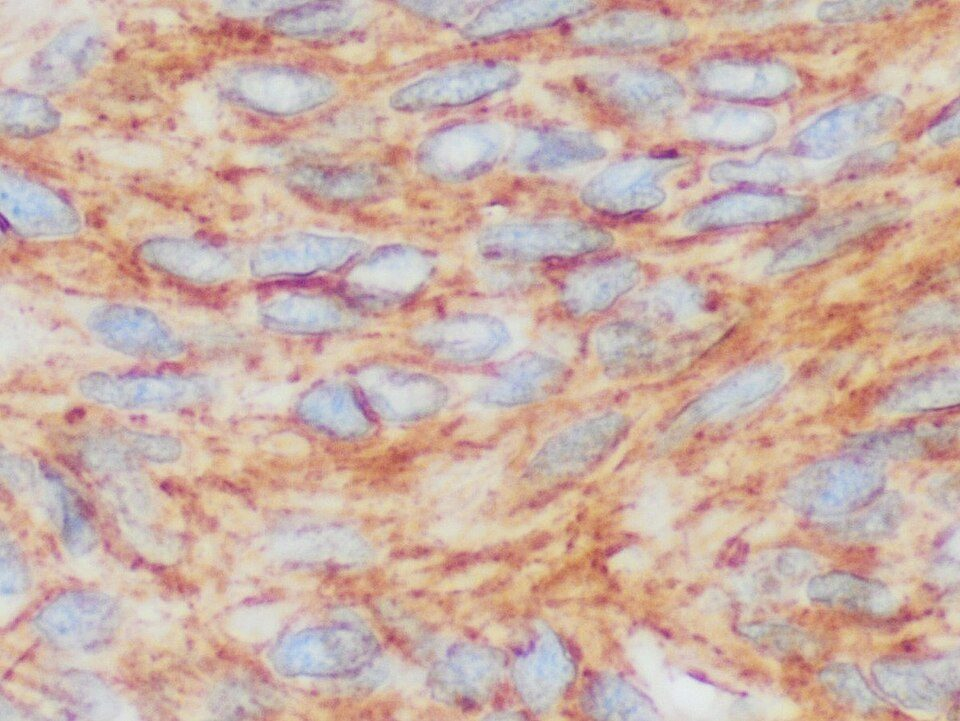

General information only. It does not replace advice from your care team and should not be used to choose a treatment.

.jpg){kind=link}
At a glance
| How common | 10-15 cases per million people a year; the most common digestive sarcoma |
| Where | Stomach (60%), small bowel (30%), rectum, oesophagus |
| Origin | Interstitial cells of Cajal, the bowel's "pacemaker" |
| Key alteration | KIT (75-80%) or PDGFRA (10%) mutations |
| Treatment | Surgery; imatinib for 3 years if relapse risk is high |
What it is
GIST arises from the interstitial cells of Cajal, described by Santiago Ramón y Cajal, which coordinate bowel movements. Almost all carry a mutation that permanently switches on the KIT (CD117) or PDGFRA receptor, a growth switch stuck "on".
There are subtypes without these mutations ("wild type"): SDH-deficient (in young people and Carney triad), those linked to neurofibromatosis type 1, and rare ones with BRAF or NTRK.
Symptoms and diagnosis
Many small ones are found by chance on endoscopy or CT. Large ones may bleed (black stools, anaemia), cause pain or a palpable mass. Diagnosis is by CT, endoscopic ultrasound with needle sampling, and the biopsy shows KIT/CD117 or DOG1 positivity. The mutation is always tested because it determines treatment.
Relapse risk
It depends on size, mitotic count and site (stomach GISTs are less aggressive than small bowel ones). Tumour rupture greatly increases risk.
Treatment
- Surgery with clear margins without rupturing the capsule; lymph node removal is not usually needed. Stomach GISTs under 2 cm may be watched.
- Adjuvant imatinib for 3 years for high-risk tumours, which improves survival compared with one year (SSG XVIII trial).
- Neoadjuvant imatinib to shrink large tumours before surgery.
- Advanced disease: imatinib (400 mg; 800 mg for exon 9 mutations), and on progression sunitinib, regorafenib and ripretinib. Avapritinib for the imatinib-resistant PDGFRA D842V mutation.
- The mutation decides: some (such as PDGFRA D842V or SDH-deficient) do not respond to imatinib.
Outlook
Before imatinib (approved in 2002) survival with metastases was under 2 years; today the median exceeds 5 years and some patients live more than a decade. Low-risk localised tumours are cured by surgery.
What's new
Next-generation inhibitors against resistance mutations (bezuclastinib, IDRX-42), and monitoring with liquid biopsy.
See also: Sarcomas, Stomach and oesophageal cancer, Targeted therapy.
History · Medicapedia
Gastrointestinal stromal tumour (GIST) in the history of medicine
How it was discovered, who studied it and how its treatment changed over the centuries, told on Medicapedia, our sister site on the history of medicine.
Read the history on Medicapedia ↗Sources
- Casali PG, et al. Gastrointestinal stromal tumours: ESMO-EURACAN-GENTURIS Clinical Practice Guidelines. Ann Oncol. 2022;33:20-33. doi:10.1016/j.annonc.2021.09.005
- Joensuu H, et al. One vs three years of adjuvant imatinib for operable gastrointestinal stromal tumor (SSG XVIII). JAMA. 2012;307:1265-1272. doi:10.1001/jama.2012.347
- Demetri GD, et al. Efficacy and safety of imatinib mesylate in advanced gastrointestinal stromal tumors. N Engl J Med. 2002;347:472-480. doi:10.1056/NEJMoa020461
- GIST Cancer UK. gistcancer.org.uk